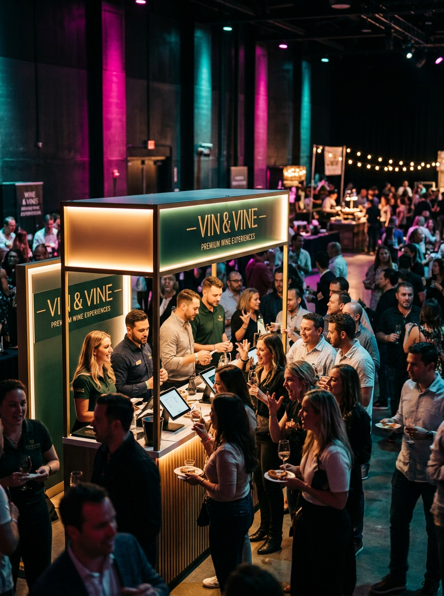
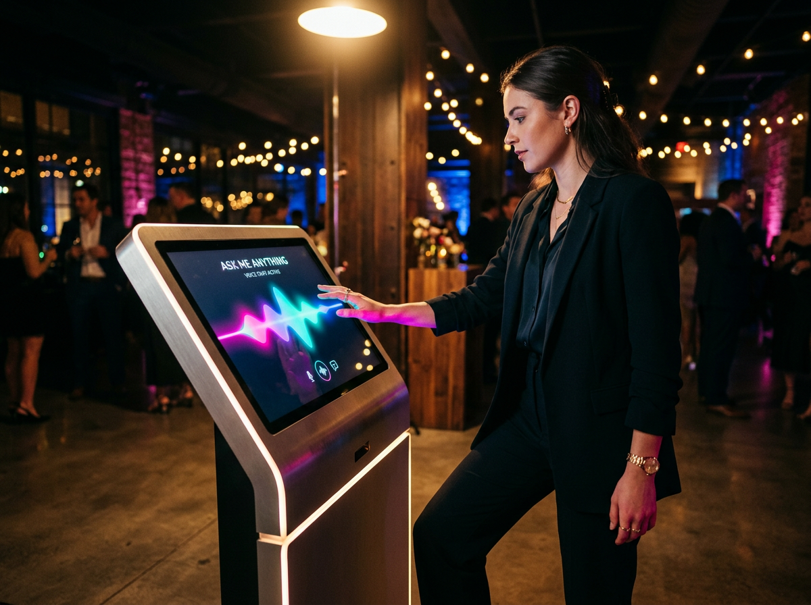
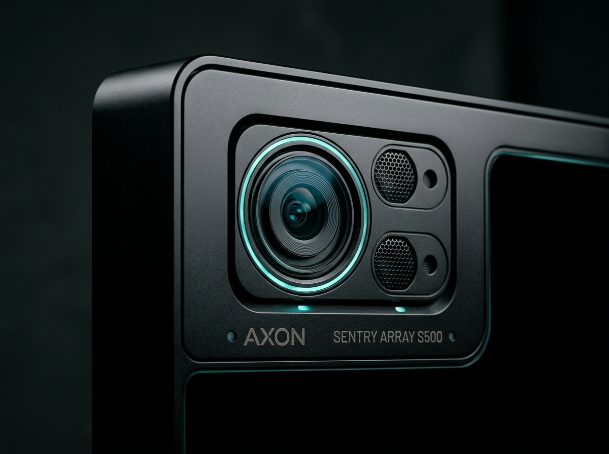

01
Conversational AI interface
Hands-free, natural voice interaction for seamless engagement in any setting — from quiet lobby to crowded show floor.
Deploy voice-driven kiosks that automate tasks, streamline operations, and turn every lobby, storefront, and event into a moment people actually talk about.
The same kiosk that automates a Fortune 500 lobby can headline a sold-out brand activation. One platform. Every surface.
Hands-free, natural voice interaction for seamless engagement in any setting — from quiet lobby to crowded show floor.
Trigger backend processes the moment a guest taps in. Enterprise integrations, live — no waiting, no friction.
Cameras, sensors, printers, peripherals. Configure the kiosk around the moment, not the other way around.
Connect software intelligence with real-world actions — check-ins, badges, prints, inventory, payments.
Enterprise-grade protection. Compliant by default, audit-friendly, and locked down end to end.
Deploy, manage, and update kiosks across locations from a single platform. One dashboard. Unlimited surfaces.
No app. No QR code chase. No line-killing setup.
The kiosk takes over — voice, vision, lighting, framing.
Checked in, badged, captured, automated. Sent to email or phone in under a minute.
Examples below showcase live PowerWyze deployments — corporate activations, hospitality, and event check-in.

A four-day activation with PowerWyze running guest engagement, lead capture, and on-the-spot personalization. The booth never had a quiet minute.

Voice-first interaction handled complex tasks the way guests actually want — by asking. No menus, no fumbling, no help desk.

Cameras, mics, printers, sensors — the kiosk adapts to the use case. From event check-in to instant inventory updates, the hardware keeps pace.
The conversational kiosk automated our event check-in, eliminating manual bottlenecks. Voice commands handled complex tasks, impressing our entire team.
Integrating the kiosk streamlined our visitor management. Automated workflows reduced friction and improved efficiency across our systems.
We rely on the kiosk for instant inventory updates. Hardware integration and automation deliver unmatched operational speed.
Trade shows, conventions, festivals, pop-ups, multi-day brand experiences.
→Visitor management, badging, automated check-in, executive concierge.
→Inventory, ordering, loyalty, voice-driven guest support at the point of sale.
→Registration, badge printing, lead capture, sponsor activations on the floor.
→Multi-day events, conventions, trade shows, branded activations, lobbies, and storefronts — tell us the venue and we'll spec the kiosk.